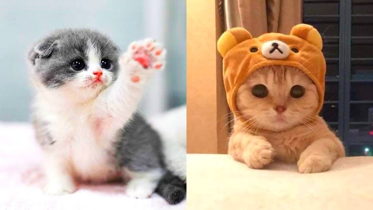
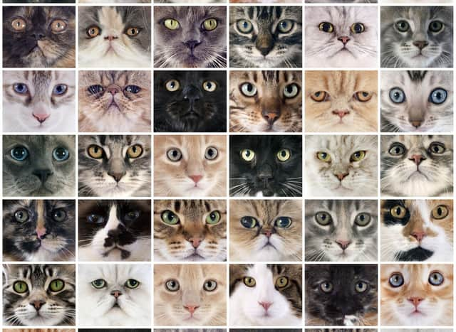
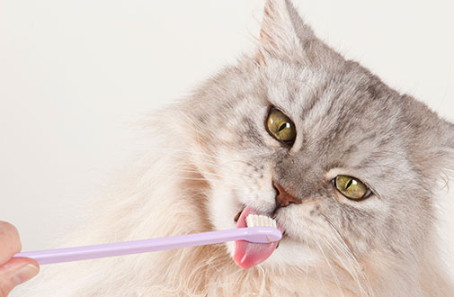

Introduction to Cats

Cats are one of the most popular pets in the world. They are known for their affectionate personalities, playfulness, and independence. In this guide, we'll take a closer look at these amazing creatures, including their history, different types, and the care they need to thrive.
Types of Cats

There are many different breeds of cats, each with its own unique features, personality, and appearance. Some of the most popular breeds include the Siamese, Persian, and Maine Coon. Whether you're looking for a long-haired or short-haired cat, there's sure to be a breed that's perfect for you.
Cat Care

Cats are relatively low-maintenance pets, but they still need love, attention, and proper care to stay healthy and happy. This includes providing them with a nutritious diet, plenty of fresh water, regular exercise, and regular visits to the vet for check-ups and vaccinations.
Fun Facts about Cats